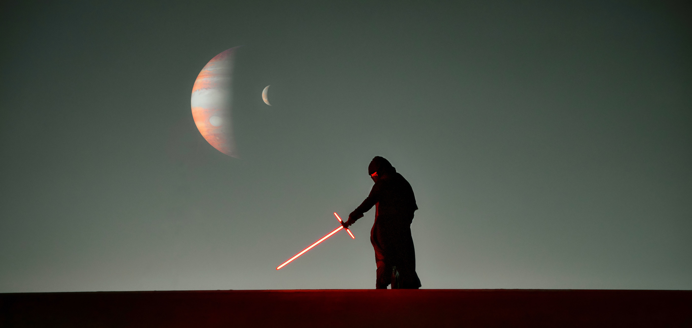
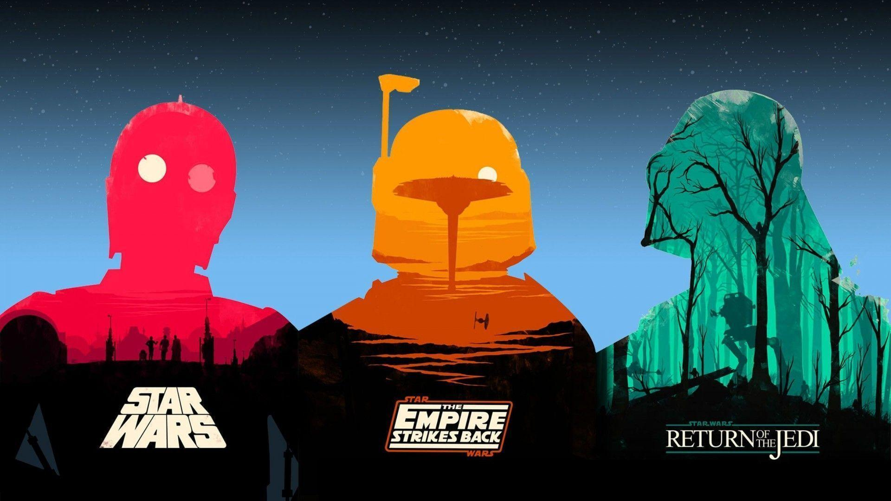

lightsaver
A lightsaber is a fictional energy sword featured throughout the Star Wars franchise. A typical lightsaber is depicted as a luminescent plasma blade about 3 feet (0.91 m) in length emitted from a metal hilt around 10.5 inches (27 cm) in length. [1] First introduced in the original Star Wars film,[a] it has since appeared in most Star Wars films, with at least one lightsaber duel occurring in each installment of the "Skywalker saga". The lightsaber's distinct appearance was created using rotoscoping for the original films, and with digital effects for the prequel and sequel trilogies.
As presented in the films, a lightsaber's energy blade can cut, burn, and melt through most substances with little resistance. [4] It leaves cauterized wounds in flesh, but can be deflected by another blade, by energy shields, lightsaber or by the metal beskar. The blade has even been used as a tool to weld metal. Other times, the lightsaber has been shown to cause bleeding wounds in the flesh, sometimes accompanied by burns. Some exotic saber-proof melee weapons have been introduced in the Expanded Universe as well as later episodic films. An active lightsaber gives off a distinctive hum, which rises in pitch and volume as the blade is moved rapidly through the air. Bringing the blade into contact with another lightsaber's blade produces a loud crackle.
Prop construction

For the original Star Wars film, the film prop hilts were constructed by John Stears from old Graflex press camera flash battery packs and other pieces of hardware. The full-sized sword props were designed to appear ignited onscreen, by later creating an "in-camera" glowing effect in post-production. The blade is a three-sided rod which was coated with a Scotchlite retroreflector array, the same sort used for highway signs. [14] A lamp was positioned to the side of the taking camera and reflected towards the subject through 45-degree angled glass so that the sword would appear to glow from the camera's point of view.
Set decorator Roger Christian found the handles for the Graflex Flash Gun in a photography shop in Great Marlborough Street, in London's West End. [15] He then added cabinet T-track to the handles, securely attaching them with cyanoacrylate glue. Adding a few "greebles" (surface details), Christian managed to hand-make the first prototype of a lightsaber prop for Luke before production began. George Lucas decided he wanted to add a clip to the handle, so that Luke could hang it on his belt. When all was said and done, Lucas and Spielberg returned the 1970s audience, grown sophisticated on a diet of European and New Hollywood films, to the simplicities of the pre-1960s Golden Age of movies... They marched backward through the looking-glass. Once Lucas felt the handle was up to his standards, it went to John Stears to create the wooden dowel rod with front-projection paint so that the animators would have a glow of light to enhance later on in post production. Due to lack of preparation time, Christian's prototype and a second spare were used for the shooting in Tunisia, where filming on Star Wars began. [16] It was discovered, however, that the glowing effect was greatly dependent on the rod's orientation to the camera, and during the Obi-Wan Kenobi/Darth Vader duel, they could clearly be seen as rods. Because of this, the glow would be added in post-production through rotoscoping, which also allowed for diffusion to be employed to enhance the glow.
Visual effects

Korean animator Nelson Shin, who was working for DePatie–Freleng Enterprises at the time, was asked by his manager if he could animate the lightsaber in the live-action scenes of a film. After Shin accepted the assignment, the live-action footage was given to him. He drew the lightsabers with a rotoscope, an animation which was superimposed onto the footage of the physical lightsaber blade prop. Shin explained to the people from Lucasfilm that since a lightsaber is made of light, the sword should look "a little shaky" like a fluorescent tube. He suggested inserting one frame that was much lighter than the others while printing the film on an optical printer, making the light seem to vibrate. Shin also recommended adding a degausser sound on top of the other sounds for the weapon since the sound would be reminiscent of a magnetic field. The whole process took one week, surprising his company. Lucasfilm showed Shin the finished product, having followed his suggestions to use an X-Acto knife to give the lightsaber a very sharp look, and to have sound accompany the weapon's movements.
Depiction
lightsabers were present in the earliest drafts as mundane plasma weapons that were used alongside laser guns. [21][22] The introduction of the Force in a later revision made the Jedi and the Sith supernaturally skilled; initially they were only portrayed as swordsmen. [23] The lightsaber became the Force-user's tool, described in A New Hope by Obi-Wan Kenobi as "not as clumsy or random as a blaster. An elegant weapon, for a more civilized age." [24] The source of a lightsaber's power is a kyber crystal. [25] These crystals are also the power source of the Death Star's superlaser.
Cultural impact

Since the release of the first film, replicas of lightsabers have been a popular piece of Star Wars merchandise, ranging from inexpensive plastic toys to the "Force FX" series from Master Replicas, deluxe replicas which use LED-lighted tubes and sound effects to create a close audio-visual representation of what is seen on screen.Disneyland in California sells lightsaber-themed churros outside its Star Tours attraction. [45] Disneyland and Disney World (Hollywood Studios) also sell legacy lightsabers which are replicas of the lightsaber seen used by the Jedi and Sith in the movies such as Darth Vader, Obi-Wan Kenobi, Rey Skywalker, Count Dooku, and Kylo Ren. [46][47] Disneyland and Hollywood Studios also offer Savi's Workshop, a place where guests can build their own lightsaber and choose their own kyber crystal, thereby changing the blade color of their own unique lightsaber. [48][49][50] Besides Savi's Workshop, there is another custom lightsaber experience. The Star Trader at Disneyland offers guests a chance to build their own lightsaber, without first paying 200 dollars for the experience.
Games

With the advent of motion-controlled video games, players were given the opportunity to wield an in-game lightsaber with their own hands. In the seventh generation of video game consoles, there were several Star Wars video games available on the Wii (Lego Star Wars: The Complete Saga, Star Wars: The Force Unleashed, Star Wars: The Clone Wars – lightsaber Duels, Star Wars: The Clone Wars – Republic Heroes and Lego Star Wars III: The Clone Wars) and one on the Xbox 360 (Kinect Star Wars) that utilized motion controls to wield a lightsaber through arm gestures. Unleashed and Duels, both developed by Krome Studios, have more precise control of the lightsaber, allowing players to swing it in any of five different directions (up, down, left, right or forward) with the Wii Remote, while Kinect takes advantage of the eponymous, camera-based motion controller to grant the player a more fluid, one-to-one control method of swinging the lightsaber.